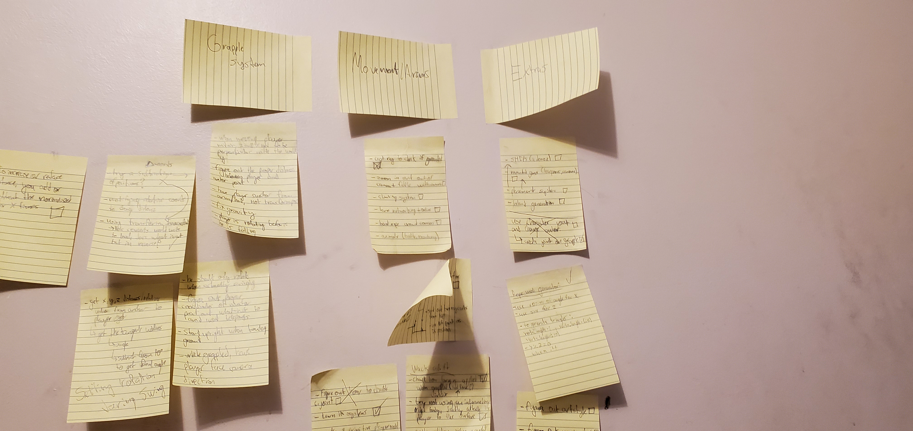

14/1/2021

I'd like to preface with saying that I'm making this in unity, just like my other game. Which also happens to be the same engine that the original game runs on. I don't want this to be a carbon copy of World's Adrift, I will attempt to implement alot of the mechanics and gameplay that it has, but once I will be deviating from time to time. For one, art style; partly because of the fact that I am artistically inept, and partly because I'd like to try a different look with more vibrant colours.
I have already begun working on the game and I have a large collection of post-it notes on my wall for things that I am either working on currently, or intending to work on. I really want to move this over to something like trello because it is so much easier to manage and keep track of things. However I really like the tactile feeling and rapidity at which you can use post-it notes to write out ideas, solutions and just pour your thoughts onto. Finding a compromise between the two will be annoying.
So far I have a simple IK system for the legs which uses raycasts to find where the feet should be (I have an idea on how to improve that). I also have a rudimentary and buggy grapple system, I really hate the configurable joints in unity. And I've also worked on some mesh generation, which was some of the hardest math I've ever done. These will all eventually be added to a trello with the rest of my post-it notes, along with the ways I wish to improve them.